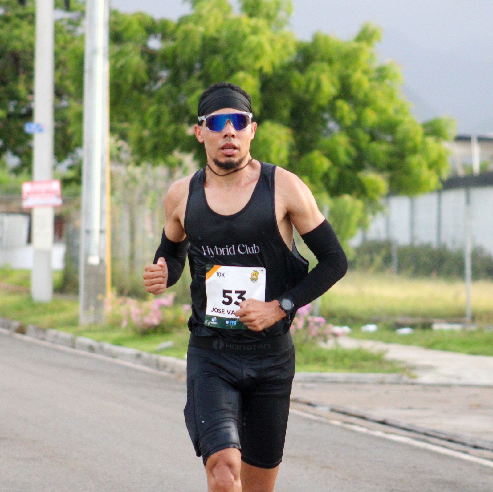
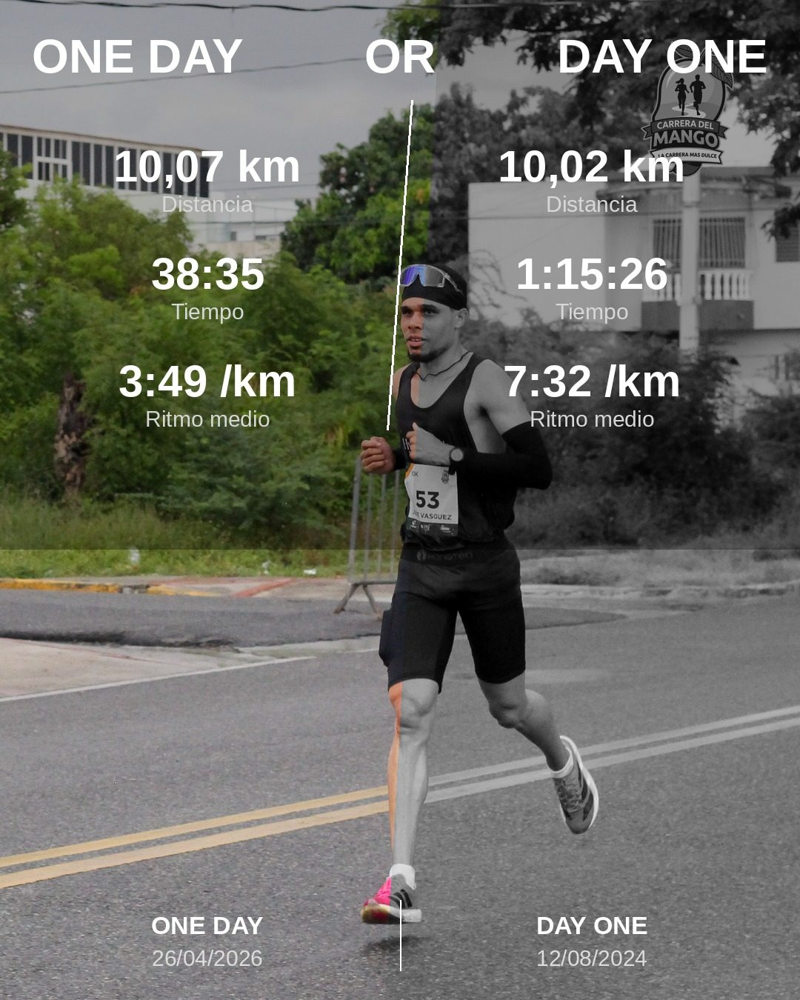
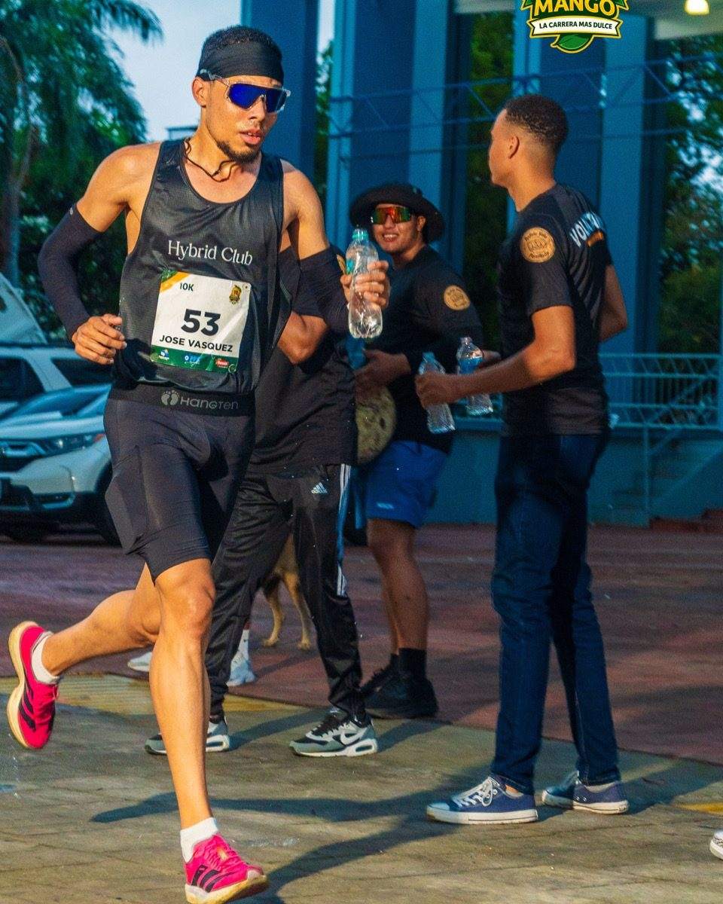
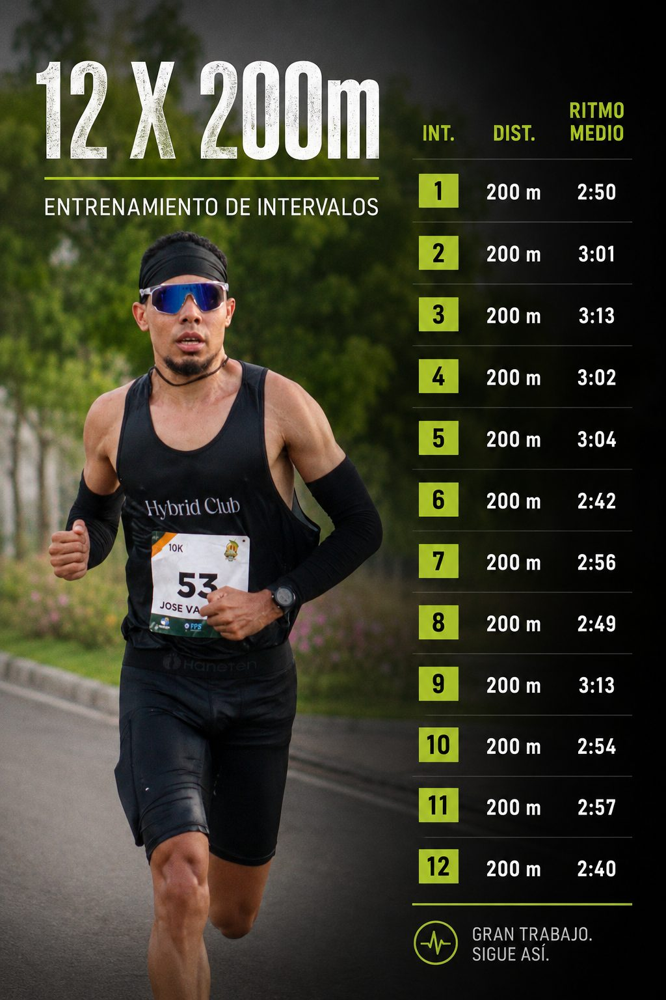
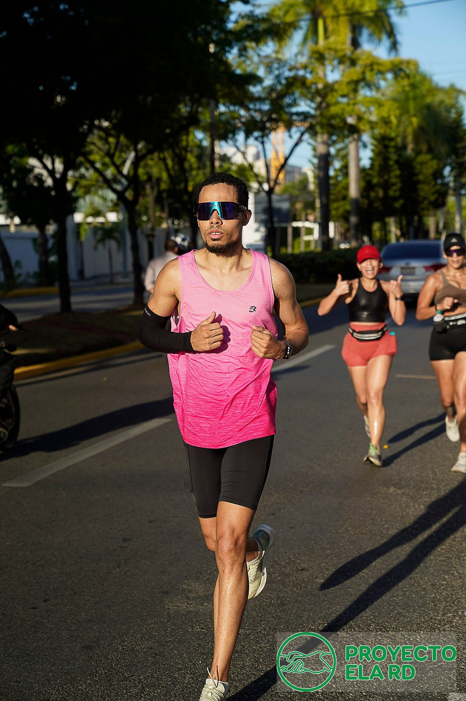

Corre tu mejor carrera. Yo marco el ritmo.
Soy Jose Vasquez, corredor de ruta en República Dominicana. Acompaño a corredores principiantes e intermedios como pacer para que logren su meta: 5K sub-20, 10K sub-45 y más. Tú pones las ganas, yo pongo el ritmo exacto.


De 1:15:26 a 38:35 en el 10K
Mi primer 10K, en agosto de 2024, lo terminé en 1 hora y 15 minutos. Veinte meses después crucé la meta de la Carrera del Mango en 38:35, a 3:49 por kilómetro. No fue talento: fue constancia, estructura y aprender a respetar cada ritmo de entrenamiento.
"One day or day one. Un día lo decidí, y ese fue el día uno."
Ese camino es exactamente el que recorren los corredores principiantes e intermedios a los que hoy acompaño. Sé lo que se siente pelear por bajar de 60, de 50 y de 45 minutos, porque pasé por cada una de esas barreras. Como pacer, mi trabajo es que tú las rompas sin quemarte en el primer kilómetro y sin dejar nada en el último.
Entreno a diario en República Dominicana — fondos, intervalos, tempo, VO2max — y todo queda registrado en mi Strava.
Tu meta, mi ritmo
Corro contigo tu carrera objetivo marcando el ritmo exacto de principio a fin. Ideal para corredores principiantes e intermedios que buscan su primera gran marca.
5K por objetivo
- Ritmos de 6:00, 5:00 o 4:00 /km sostenidos
- Estrategia de carrera previa por WhatsApp
- Manejo de la salida y del último kilómetro
- Motivación constante durante la carrera
10K por objetivo
- Ritmos de 5:00, 4:30 o 4:00 /km sostenidos
- Plan de parciales kilómetro a kilómetro
- Recordatorios de hidratación en ruta
- Cierre controlado para tu mejor sprint final
Media maratón y más
- Pacer para 21K según tu marca objetivo
- Acompañamiento en entrenamientos de calidad
- Intervalos, tempo y fondos con compañía
- Asesoría de ritmos para tu próxima carrera
¿Tu meta no está en la lista? Escríbeme por WhatsApp y armamos un plan a tu medida.
Así entreno cada semana
Datos reales de mi Strava. Si voy a marcarte el ritmo el día de la carrera, primero lo sostengo en el entrenamiento.
Long Run — 20 km
Reintegrándome al fondo largo: 20 km continuos construyendo la base aeróbica que sostiene todo lo demás.
12 × 200m — Intervalos
Repeticiones cortas para afinar la velocidad: la más rápida a 2:40 /km y cerrando la sesión más fuerte que al empezar.
3000m Trial
Test de 3000 metros en condiciones de calor intenso — la referencia que confirma el estado de forma actual.
Fartlek — 12 repeticiones
Cambios de ritmo sobre 10 km para enseñar al cuerpo a acelerar cansado: justo lo que hace falta al final de una carrera.
Resultados en la calle
Cada marca de esta lista empezó siendo una meta que parecía imposible.



¿Rompemos tu marca juntos?
Cuéntame tu carrera, tu fecha y tu meta. Te respondo con la estrategia y la disponibilidad. También me encuentras en Instagram y Strava.